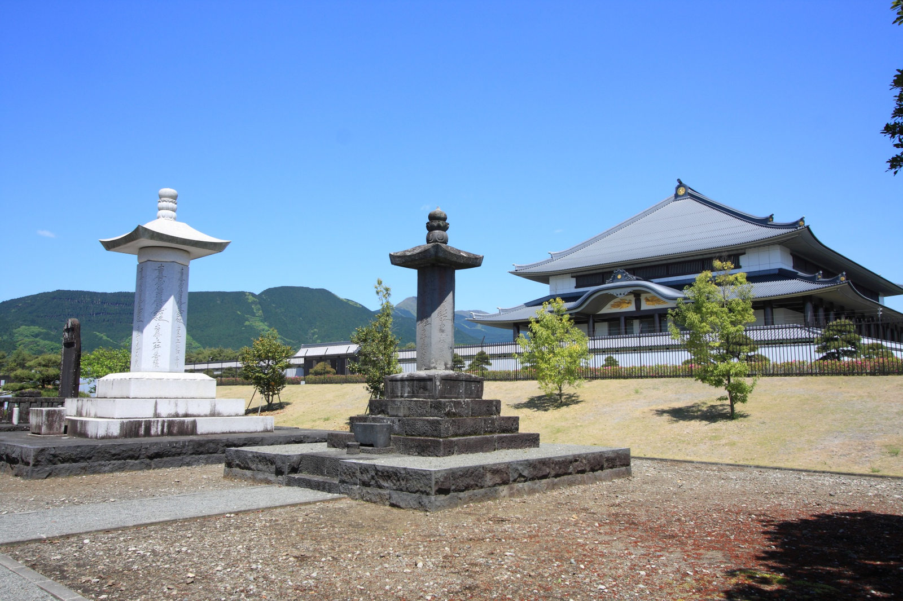
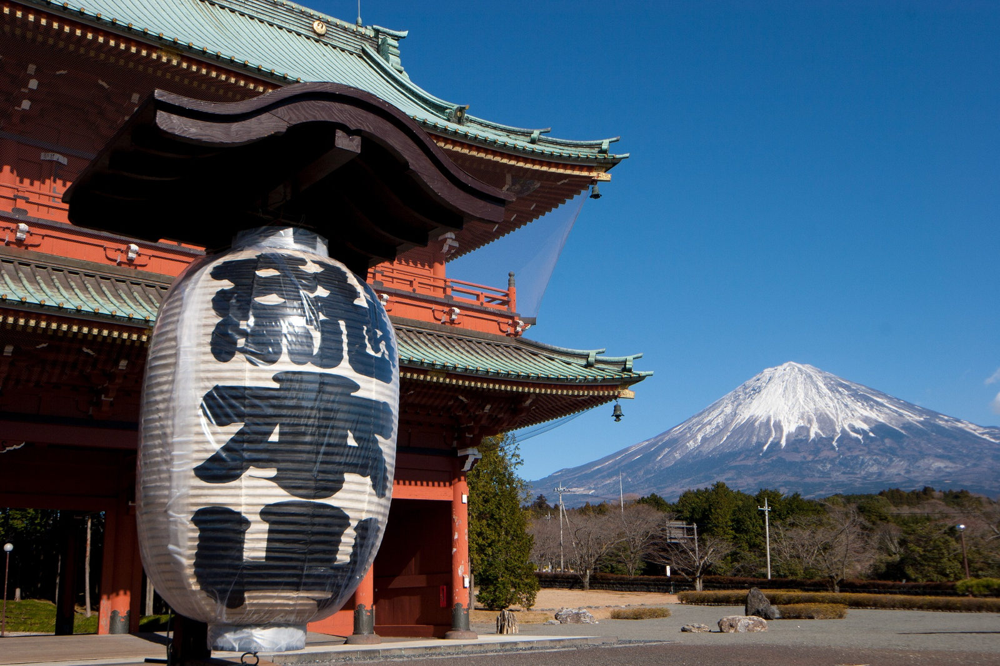
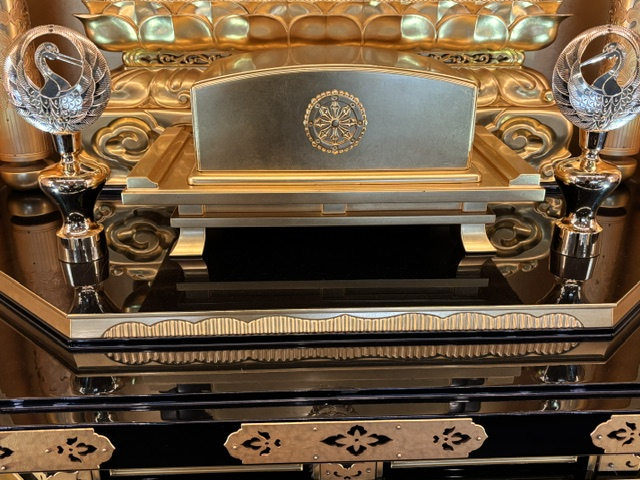

写真の確認状況：掲載写真はすべてご提供いただいた資料です。撮影地・名称・公開許可の最終確認前のため、神戸の妙本寺の境内・建物とは断定していません。



植物やお供えについて知る
蓮の花と、仏前に供えるしきみ（樒）についても別ページでご覧になれます。
ご提供いただいた写真を通して、寺院の風景や仏具に触れるページです。妙本寺の現地写真と確認できていないものを、妙本寺の建物だと誤解されないようにご案内します。



蓮の花と、仏前に供えるしきみ（樒）についても別ページでご覧になれます。